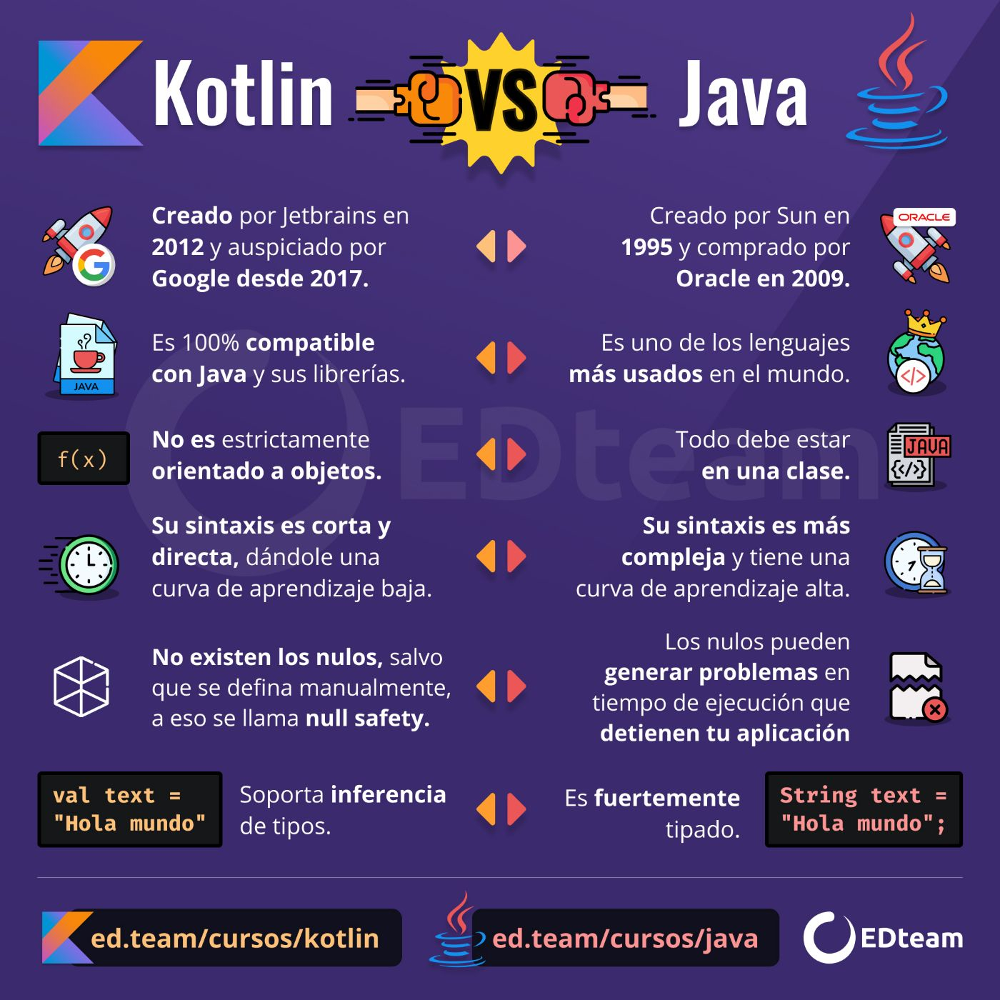

.png)

.jpeg)

La historia de Kotlin data de 2016, cuando JetBrains, la famosa empresa creadora de varios de los IDE’s más usados como IntelliJ, WebStorm entre otros, publica la primera versión de este lenguaje de programación. Se trata de un lenguaje de programación de tapado estático que puede correr sobre JVM, JavaScript y desde hace poco sin necesidad de ninguna de estas ya que paralelamente se está desarrollando en nativo con LLVM. Gracias a esto es totalmente interoperable con código Java lo que nos permite migrar de una forma gradual nuestros proyectos.
¿Qué es Kotlin? Kotlin es un lenguaje de programación estático, gratuito, de código abierto y de propósito general. Se trata de un sistema inicialmente diseñado para JVM (Java Virtual Machine) y Android, que combina características de programación funcional y programación orientada a objetos. se trata de un lenguaje de programación de código abierto, de tipo estático y multiplataforma. Kotlin apareció por primera vez en 2011, aunque no tuvo mucha popularidad en sus primeros cinco años de vida. No fue hasta el año 2017, y gracias a que Google anunció que daría soporte a Kotlin, cuando finalmente este lenguaje de programación empezó a ganar popularidad entre los desarrolladores de aplicaciones para Android. La primera versión estable de Kotlin salió en marzo de 2020. Aunque las versiones anteriores ya fueron empleadas por muchas empresas para el desarrollo de aplicaciones para Android. Desde entonces, la adopción de Kotlin ha ido en aumento. En encuestas recientes realizadas a desarrolladores y programadores, un 72% de ellos dijeron que Kotlin se había convertido en su opción preferida a la hora de desarrollar para Android. Vamos a ver algunos de los motivos por los que esto es así.
Desarrollo multiplataforma Una de las mayores ventajas de Kotlin es su desarrollo multiplataforma. Kotlin se puede utilizar para cualquier tipo de desarrollo: desde la web del lado del servidor y del lado del cliente hasta Android y iOS. El lenguaje se ejecuta en JVM, lo cual permite compartir código entre diferentes plataformas. Esto ofrece la posibilidad de reutilizar códigos existentes, lo que ahorra mucho tiempo y energía.
Kotlin destaca por varias características que no solo simplifican la lectura del código sino el propio desarrollo de este. Es por ello que las ventajas de Kotlin respecto a Java a la hora de desarrollar aplicaciones móviles ha hecho que este lenguaje se haga cada vez más popular. ¿Null Pointer Exception? Adiós Al trabajar con Java nos solemos encontrar con un error muy habitual, los nulos. Kotlin nos permite controlar esa incógnita a la hora de desarrollar nuestras aplicaciones (del mismo modo que lo hace Swift en iOS) dándonos la tranquilidad de que, si lo hacemos bien, nuestra app no va a fallar en ningún momento por esta situación. Además, dispone del operador Elvis para simplificar el trabajo. Curva de aprendizaje La simpleza de la sintaxis permite una curva de aprendizaje muy sencilla, ideal para aprender tu primer lenguaje de programación. Por ponerte un ejemplo muy habitual al trabajar con listas en Java, para acceder a la primera posición tendrás que buscar en la posición 0, en Kotlin simplemente llamarías a la función first(). ¿Orientado a objetos? ¿Funcional? Mejor ambas Aunque lo habitual en el desarrollo de aplicaciones móviles era un paradigma de programación orientada a objetos (o POO), Kotlin ha venido a romper los esquemas y demostrarnos que la POO puede trabajar de la mano de la programación funcional. La posibilidad de trabajar con lambdas en este entorno simplifica las tareas más comunes y tediosas en el desarrollo.
Estas son solo algunas de las características de Kotlin que lo hacen especialmente poderoso para trabajar en nuestras apps, aun así, Kotlin vs Java es un debate que se mantendrá al rojo vivo durante varios años más, pero si aún te estás preguntado si deberías seguir con Java o empezar en Kotlin te recomiendo que simplemente eches un ojo a LinkedIn para que veas por ti mismo que se demanda más a día hoy. Corrutinas Posiblemente una de las mayores ventajas que este lenguaje nos aposta. Las corrutinas optimizan la programación asíncrona simplificando el tedioso trabajo de las llamas de red y accesos a nuestras bases de datos entre otras. Con ello podrás olvidarte de librerías como rxJava. Comunidad La comunidad de Kotlin está muy enfocada en el open source y gracias a eso tenemos una ingente cantidad de documentación y código libre que nos ayudará a entender a fondo este lenguaje desde el comienzo, como por ejemplo este curso de Kotlin. Kotlin Multiplatform mobile Posiblemente no hayas escuchado hablar de esto ya que todavía está en alpha, pero Kotlin Multiplatform nace con la idea de compartir la misma lógica de negocio en iOS y Android con Kotlin. Este tema es muy interesante ya que podríamos tener en el futuro casi la misma app en ambas plataformas compartiendo todo el core del desarrollo. Y aunque pienses que todavía está muy verde ya que es alpha, grandes empresas como Netflix y Philips ya lo están usando.
Ya hemos hablado de lo fantástico que es Kotlin y su sintaxis, pero ahora es el momento de demostrarlo en el papel.
En Kotlin podemos decidir si nuestra variable será como su propio nombre indica una variable o si por el contrario será constante, esto nos da el don de la inmutabilidad que nos librará de errores y además ahorrará memoria. Si quisiéramos un valor constante utilizaríamos la palabra reservada val
Si por el contrario queremos que sea variable la reemplazaríamos por var
Si te fijas bien en los ejemplos anteriores verás que no he definido el tipo de variable ya que Kotlin es capaz de adivinar el tipo por el valor asignado. Aunque también podremos añadírselo nosotros mismos para forzar.